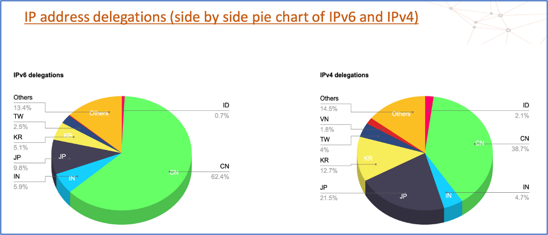
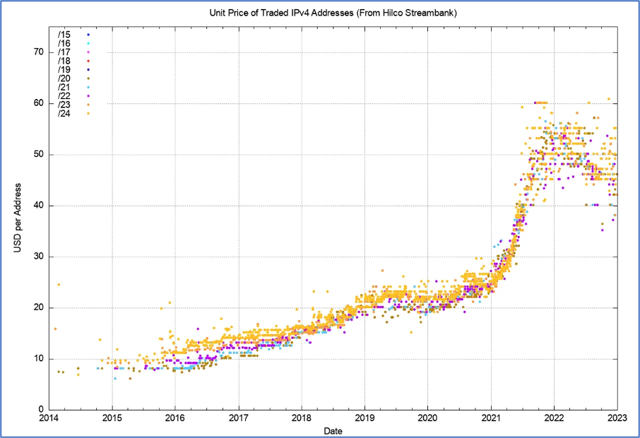

The APNIC 55 meeting was held in Manila, Philippines from 20th Feb to 02nd March 2023. The meeting was hosted by PhNOG, The Philippine Network Operators Group (PhNOG) and supported by DOST- Advanced Science and Technology Institute. Every year, APNIC conferences are held twice, the first of each year is held in conjunction with APRICOT and the second one is a standalone conference. The last such meeting held in India was in 2012, APNIC 33 (which was in conjunction with APRICOT 2012).
APNIC 55 meeting was unique in multiple senses –
- Firstly, because of the possibility of potential hijack[1][2][3]
of the
APNIC
Executive Council by Cloud Innovation Ltd. / Larus foundation / NRS, the same
organizations which have dragged AFRINIC (RIR for African Continent) into the Mauritius supreme
court
and at one point nearly halted the AFRINIC operations by getting its bank accounts frozen (over 25
lawsuits have been filed against AFRINIC by Cloud Innovation Ltd.). Number Resource Organization (NRO is the coordinating body of the world’s
Regional Internet Registry, RIR) wrote a letter (signed by CEOs/MDs of 4 other RIRs, namely, APNIC, ARIN, LACNIC, RIPE
NCC)
to Mauritius Government to express their serious concerns about the issues and courts cases on
AFRINIC.
This caused restlessness in the community and everyone was concerned about the Executive Council election results. A few of the community members including Mr Karl Kloppenborg, Marco and others send a proposal to APNIC to hold an extraordinary meeting to discuss the EC election process and amend the by-laws accordingly . Mr Maemura Akinori from JPNIC, a veteran and respected name in the Internet community (ex APNIC EC, ex ICANN Board member, presently on the board of DotAsia) also raises JPNIC’s concerns on the possible executive council hijack (JPNIC is the organization which took the initiative to establish APNIC thirty years ago and has been a member of it since then).
The community elected the following members to the APNIC EC –
- Yoshinobu Matsuzaki
- Kenny Huang
- Roopinder Singh Perhar
- Anlei Hu
Mr Yoshinobu Matsuzaki and Mr Kenny Huang got re-elected and Mr Roopinder Singh Perhar and Mr Anlei Hu joined the executive council. Mr Roopinder Singh Perhar was an EC member in the past and served as EC from 2016 to 2017.
Executive Council appointed Mr Kenny Huang as Chair, Mr Yoshinobu Matsuzaki as Treasurer and Mr Vincent "Achie" Atienza as Secretary.
In the next few APNIC meetings, there may be discussions on the EC election process and on updating its by-laws.
- Second, Mr Gaurab Raj Upadhaya, another veteran and a respected name in the APNIC community, (served six terms in the APNIC Executive Council from 2011 to 2022 , and on the chair from 2016-2022) steps aside from APNIC Executive Council.
- In the APNIC NIR SIG session, a meeting place for seven National Internet Registries (CNNIC,
IDNIC,
IRINN, JPNIC, KRNIC, TWNIC, and VNNIC), there were discussions and presentations on IPv6 deployment,
RPKI, uniqueness among NIR's and updates from NIR members. In one of the NIR’s session, IP address
delegations to various countries were discussed and a pie chart comparison is shown below.

It is worth mentioning that more than 60% of total IPv6 address delegations by APNIC went to China and India has roughly 6% of IPv6 addresses allocated within the APNIC region. Although population-wise and Internet penetration-wise , both these countries are nearly comparable but IPv6 address allocation to India is 1/10 of that of China.
- In a joint SIG meeting, there were discussions on Updating the election process of SIGs
- In the APNIC Routing Security SIG meeting, there were presentations and discussions on multiple topics including “Status of hierarchical vs non-hierarchical as-sets” and there was a policy (prop-151: Restricting non-hierarchical as-set) on the same topic, and the consensus was reached on this in OPM and AGM both.
- In Open Policy Meetings 1 and 2, one of the most popular sessions of APNIC conferences, the
community discusses the proposal in person, or via remote participation. At the end of the period
allotted to discuss the proposal, the SIG Chair(s) decide if the community has reached a consensus.
If
the SIG accepts the proposal, the Chair reports that decision at the APNIC Member Meeting (AMM).
The following policy proposals were discussed –
- prop-147: Historical Resources Management
- prop-149: Change of maximum delegation for less than /21 total IPv4 holdings
- prop-150: ROA/whois object with Private, Reserved and Unallocated (reserved/available) Origin ASN.
- prop-151: Restricting non-hierarchical as-set
Consensus has been reached on Prop-147, Prop-150 and Prop-151 at APNIC 55. Prop-148 and prop-149 are under discussion and shall be discussed further in the next APNIC meeting. OPM is one of the most important sessions as policy proposals are discussed and then after the voting took place on the policy proposals.
There was a Panel discussion on the Leasing of IP addresses. The existing APNIC policies are silent on leasing, and there was a policy in APNIC 54 on leasing (which was held in Singapore in September 2022), ‘prop-148: Leasing of Resources is not Acceptable’, which didn’t reach a consensus. Leasing is a tricky point as ISPs, network services providers and other organizations use IP addresses outside their ASN boundary also for multiple reasons, and a negative policy on this can lead to chaos for a few networks/organizations.
One of the probable examples of leasing is 1.1.1.1 (and 1.0.0.1). The 1.1.1.0/24 and 1.0.0.0/24 IP segments are allocated to APNIC-LABS and the segments are announced from ASN 13335, Cloudflare’s ASN.
Current APNIC policies allowed the transfer of resources by paying the fees (the resources have to be marked as unused for transferring/selling and the current market price of an IPv4 address is approximately $50 per address)
Source - https://blog.apnic.net/2023/01/23/ip-addressing-through-2022/
- DNS Abuse session – Mr Champika from ICANN talks about the Domain Abuse Activity Reporting (DAAR)
and Centralized Zone Data Service (CZDS) projects of ICANN. All gTLDs are part of DAAR and its
optional
for ccTLDs to join this. Through CZDS service , zone data of all the gTLDs (more than 1150 TLDs as
of
march 2023) are available for the researchers and can be used for various data analytics and cyber
security purposes. A few of the interesting findings using this CZDS data are –
- Who controls the internet
- Who reads your email?
- Annual General Meeting – Following reports were presented -- APNIC activity 2022 report, treasure’s report, EC report (where it was reiterated that fees for apnic account holders will be going to rise effective from 01st Jan 2023 , an account holder with /16 IPv4 addresses shall have to pay AUD 10,234 which is AUD 609 higher than the previous year charges), Policy SIG report, Joint SIG report, Routing Security SIG report, NIR SIG report, and Cooperation SIG report.
APNIC 55 meeting ends on 02nd March 2023.
References:
- https://lists.ausnog.net/pipermail/ausnog/attachments/20230214/86094c46/attachment-0001.pdf
- https://orbit.apnic.net/hyperkitty/list/apnic-talk@lists.apnic.net/thread/JIZFMZ3QOMUGCWFLQ6DKG45CDIY3GSRL/
- https://orbit.apnic.net/hyperkitty/list/apnic-talk@lists.apnic.net/thread/ZV2EH35IIASA22VSGTEZ76NPJBXAYPEA/
- https://mybroadband.co.za/news/internet/407770-afrinic-bank-accounts-frozen-after-r740-million-damages-claim.html
- https://afrinic.net/court-cases
- https://www.nro.net/wp-content/uploads/NRO-Letter-to-Mauritius-Government-FINAL.pdf
- https://afrinic.net/20220215-court-update-cloud-innovation-ltd-vs-afrinic-scr-5c-30-21
- https://orbit.apnic.net/hyperkitty/list/apnic-talk@lists.apnic.net/thread/ZV2EH35IIASA22VSGTEZ76NPJBXAYPEA/
- https://lists.ausnog.net/pipermail/ausnog/attachments/20230214/86094c46/attachment-0001.pdf
- https://orbit.apnic.net/hyperkitty/list/apnic-talk@lists.apnic.net/thread/RVPB2ZDTED2BTIYDOXO4V6FZCIBDYSU7/
- https://www.bigpulse.com/pollresults?code=1347334F85MguQmfUrTmJkLupT9
- https://www.apnic.net/about-apnic/organization/structure/apnic-executive-council/ec-members/past-ec-members/
- https://2023.apricot.net/assets/files/APPS314/nirsigapnic55present_1677547303.pdf
- https://en.wikipedia.org/wiki/List_of_countries_by_number_of_Internet_users
- https://2023.apricot.net/assets/files/APPS314/sigguidelineproposal_1677547638.pdf
- https://www.apnic.net/community/policy/resources
- https://help.apnic.net/s/article/IPv4-Transfer-Fees
- https://czds.icann.org/zone-request/add
- https://blog.apnic.net/2022/12/12/apnic-fee-schedule-increase-for-all-account-holders-from-1-january-2023/